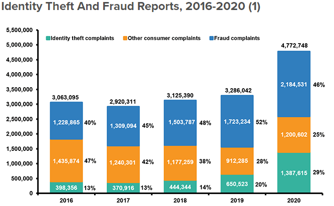

Cybersecurity
Author Jake Porter
Cyber security is an ever-growing necessity in the modern world. To better understand the role that cyber security plays, it's important to know where it comes from. The need for cyber security came about through challenges faced in the development of what we call cyberspace; the environment that cyberspace encompasses is so complex it has taken several attempts and years of research to merely develop a definition for it. According to Friedman, in 2008, the Pentagon came to the agreement to define cyberspace as ‘the global domain within the information environment consisting of the interdependent network of information technology infrastructures, including the internet, telecommunications networks, computer systems and embedded processors and controllers.’ What adds to the complexity of such an environment is not only its forever evolving magnitude but also its immeasurable content. Cyberspace is first and foremost an information environment, (Friedman, 2013), however it includes the terminals and infrastructure of the physical world that allows users of the world to be a part of this space and feel a sense of connectivity.
According to Adel Elmaghraby from Cairo University, the world is experiencing an evolution of Smart Cities. From a cyber point of view, smart refers to mechanical systems equipped with sensors, actuators, and pre-programmed controllers, which allow a structure to adapt to unpredictable external loading conditions. (Holnicki, 2008). These ‘smart’ tools add a level of intelligence to connected systems. As the term Smart City would suggest, it encompasses these tools at a massive scale. It brings users, infrastructure, economics, and devices into its own giant cyberspace. It creates new social opportunities and improvements in the quality of life. Conversely, this level of cyberspace poses risks to users’ privacy and security in the digital world. Therefore, the need for cyber security and protection concurrently grows. Cyber security can be defined as the activity, process, ability, or state whereby information and communications systems and the information contained therein are protected from and/or defended against damage, unauthorised use or modification, or exploitation (Rahman, 2020).
Furthermore, in a real-world example. Since January 2020, the world has succumbed to a global pandemic. People were thrown into a completely new digital lifestyle. Work, school, and all social interactions were conducted through a digital interface and the need for cyber security was escalating at an uncontrollable rate. Users were vulnerable and cyber crime became a very desirable possibility for criminals and fraudsters.

The above graph represents statistics in the US in the last 5 years regarding financial identity theft and fraud complaints. The direct and immediate consequence of the pandemic left millions unemployed, and the governments of the world responded with stimulus packages for their citizens. With such an immense level of traffic trying to access this solution it made it near impossible to govern, facilitate and protect individuals from cybercrime. As a result, in 2020 there was a huge spike in fraudulent crimes that were financially motivated and carried out through digital interfaces.
In this new modern world cybersecurity and protection are as important for users and families as they are for businesses, governments, and education institutions (Goutam, 2015). As mentioned, it has become near impossible to govern and protect users in the digital world. Therefore, going forward in the years to come, education will be vital in the defence of cyber activity. It is essential to educate and empower users, especially children, on the safe and responsible use of online resources and platforms to establish a culture of cyber safety (Rahman, 2020). As Rajesh Goutam from Lucknow University makes apparent, the rapid expansion of technologies makes cyber security solutions more challenging as there is presently no permanent solution. By way of explanation, as technology changes, so does our cyberspace, which introduces more threats and vulnerabilities and therefore security solutions are forced to adapt.
Additionally, it's hard to predict how cyber security will look or be used in the future. As discussed, cyber security techniques are adapted and implemented as new threats arise. To compare, 20+ years ago, before we entered the 21st century, when the world was seeing the first Nokia phone and search engines were being developed, the idea of cyber security and protection from the digital world was laughable. Much the same for the 20+ years from now. There will be new technologies, threats and security techniques that haven’t been thought of yet and the world we know now will be vastly different. Presently, with current known threats, Nikhita Gade from Cornell University explores several cyber security techniques which include:
Authentication of data
Documents or any source of information sent digitally must be authenticated and checked that the information has come from a reliable source and has not been modified in any way.
Malware Scanners
Usually comes in the form of software of a program that scans files in the system for any malicious viruses. Terms like virus, worms and trojans are all considered to be malware.
Firewalls
The firewall examines and blocks messages and packets that do not meet the security criteria. By name, it is a digital wall for potential malware.
Anti-virus Software
Like a malware scanner, anti-virus software is a program that detects malicious software; however, unlike the malware scanner, it can also act against malware and attempt to remove it. A useful feature for this software is that it auto updates to recognise newly developed viruses.
All these techniques are easy to learn to manage. Though the cyber world may be technical and complex, most interfaces like these are simplified for the average user.
Cyber security will have a large effect on me as I am wanting to study my masters in that sector. Evidently, the impacts of the pandemic have resulted in an increase of cybercrime, and it is my passion and want to be able to safely navigate my way through now and upcoming challenges. This will only be achieved through education and experience in real world applications of cyber security. As an example, in my workplace at Jb Hi-Fi we offer Norton 360 anti-virus security. We provide the customer with an activation code that they can activate with a google search to the Norton website. However, we need to direct the customer to NOT click the first link and to proceed to the second link in the google search. This is because the first link is fake and uses cross-site scripting to steal a customer’s activation code once they enter it and resell it digitally. Seeing people around me being affected by cyber crime is a great motivator to become confident in cyber security and share that knowledge with those around me. To conclude, cyber security plays a large role in cyberspace and is vast in its complexity. Its importance grows greater every year as the world moves towards a highly interconnected system and the need for education becomes more apparent as cyber threats continuously challenge our security and safety.
References
- Elmaghraby, A; Losavio, M. 2014. ‘Cyber Securities challenges in Smart Cities: Safety, security, and privacy.’ Journal of Advanced Research, Cairo University. Available at: reference link
- ‘Facts + Statistics: Identity theft and Cybercrime.’ Insurance Information Institution. Accessed: reference link 16) Friedman, A. 2013. ‘Cybersecurity and Cyberwar: What Everyone Needs to know’.
- Gade, N. 2014. ‘A study of cyber security challenges and its emerging trends on latest technologies.’ International Journal of Engineering and Technology. Available at: reference link
- Goutam, R. 2015. ‘Importance of Cyber Security’. International Journal of Computer Applications. Available at: reference link
- Holnicki, J; Motylewski, J. 2008. ‘Introduction to Smart Technologies.’ Research Gate. Available at: reference link
- Rahman, N; Sairi, H; Zizi, M; Khalis, F. 2020. ‘The Importance of Cybersecurity Education in School.’ International Journal of Information and Education Technology. Available at: reference link